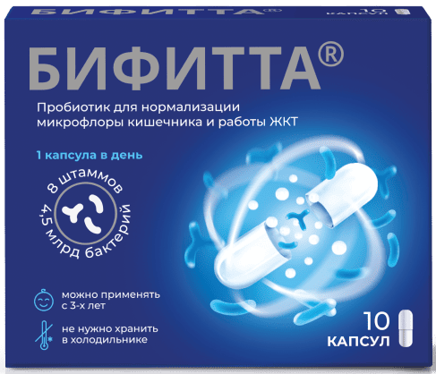

Как пробиотики влияют на процесс пищеварения?
Нарушения пищеварения могут вызвать развитие серьезных заболеваний, негативно влияют на физическое самочувствие, эмоциональный фон, состояние кожи и волос. В некоторых случаях проблемы с пищеварением связаны с нарушением баланса микрофлоры кишечника. Чтобы исправить эту ситуацию, нужны пробиотики.
Рассказываем, как микробиота ЖКТ влияет на пищеварение, почему возникает, как проявляется и устраняется дисбактериоз. Даем рекомендации по подбору пробиотиков, которые помогут восстановить бактериальный баланс и улучшить функции микрофлоры.
Как микрофлора кишечника влияет на пищеварение1-5
Микрофлора или микробиота кишечника — это микроорганизмы, которые живут в желудочно-кишечном тракте (ЖКТ). Колонизация ЖКТ бактериями начинается еще в утробе матери, а окончательное формирование микрофлоры завершается к 2–3 годам, достигая полного своего развития к возрасту 12–14 лет. Вместе с человеком стареет и микрофлора — в пожилом возрасте ее многообразие и функционирование снижаются. Микрофлора кишечника здорового человека состоит из свыше 700 родов бактерий и 2500 видов микроорганизмов, которые образуют сложную экосистему. Она играет большую роль в пищеварении, синтезе нутриентов и метаболизме:
- увеличивает энергетическую ценность пищи за счет ферментации продуктов, которые не расщепляются ферментами ЖКТ;
- повышает активность пищеварительных ферментов;
- питает и регенерирует кишечную стенку;
- улучшает аппетит;
- участвует в регуляции моторики и абсорбционной функции ЖКТ;
- осуществляет эндогенный синтез витаминов B, K и гормоноподобных веществ, положительно влияющих на нервную систему;
- ферментирует протеины;
- регулирует обмен холестерина в циклическом обращении желчных кислот в органах пищеварения;
- улучшает процессы всасывания кальция, железа, витаминов D и C;
- регулирует расход и запасание энергии за счет утилизации питательных субстратов, которые не всосались в тонком кишечнике.
Помимо пользы для пищеварения и метаболизма, микробиота защищает ЖКТ от патогенных микроорганизмов, способствует формированию местного и системного иммунитета, нейтрализует многие токсические субстраты и метаболиты (нитраты, ксенобиотики, гистамин, мутагенные стероиды).
Одинаковой микробиоты не бывает. На видовой состав микрофлоры кишечника влияют особенности питания, образ жизни, пол, раса, регион проживания человека и другие факторы. Например, плохое питание матери во время беременности может стать причиной обеднения микробиоты ребенка.
Как и почему возникает нарушение микробиоты1,6,7
Изменение видового состава микрофлоры кишечника приводит к развитию дисбактериоза. При этом состоянии количество полезных лакто- и бифидобактерий сокращается, а объем патогенных микроорганизмов возрастает.
Дисбактериоз сопровождается неприятными симптомами и сильно снижает качество жизни человека, в тяжелых случаях может стать причиной распространения инфекции по организму и развития соматических патологий.
Причины нарушения микрофлоры5,6,7,8
Дисбактериоз может развиться на фоне нарушения функций органов и систем или после воздействия определенных веществ на микробиоту кишечника.
Основные причины нарушения микрофлоры:
- повышенный уровень кортизола при хроническом стрессе;
- несбалансированное питание с недостатком нутриентов;
- инфекции ЖКТ и гельминтозы;
- лечение антибактериальными или гормональными препаратами;
- лучевая и химиотерапия;
- иммунодефициты;
- злоупотребление алкоголем и наркомания;
- аллергические реакции;
- воздействие вредных веществ на производстве.
Симптомы нарушения микрофлоры кишечника3,5,6,7,8,9
Клинические проявления дисбактериоза не зависят от степени нарушения микрофлоры. Иногда незначительные изменения в микробиоте сопровождаются выраженными симптомами, а в ряде случаев сильный дисбактериоз никак не проявляется.
Симптомы нарушения микрофлоры многообразны:
- диарея и запор;
- вздутие живота и метеоризм;
- неприятный привкус во рту и отрыжка;
- монотонные, тянущие, коликообразные или распирающие боли в животе;
- ухудшение состояния кожи и волос;
- внезапные аллергические реакции по типу крапивницы;
- потеря массы тела;
- общая слабость, недомогание, головные боли, нарушение сна;
- частые инфекционные заболевания из-за снижения иммунитета;
При появлении признаков дисбактериоза нужно обратиться к врачу, пройти обследование и лечение. Длительно протекающий дисбиоз с нарушениями всасывания нутриентов, моторики ЖКТ и метаболизма желчных кислот может стать причиной развития серьезных заболеваний, например, сахарного диабета, атеросклероза, ожирения или воспалительных патологий кишечника.
Как восстановить и поддерживать бактериальный баланс2,3,5,7,8,10
Наиболее физиологичным считается воздействие на микрофлору через продукты питания. Поэтому пациентам с признаками дисбактериоза назначают специальную диету.
Основные принципы лечебного питания:
- исключение рафинированных продуктов;
- включение в рацион клетчатки, продуктов с бактериальными культурами или бифидогенными действием, например, морковного или тыквенного сока;
- соблюдение баланса жиров, углеводов и белков;
- оптимальный питьевой режим.
Диета малоэффективна при сильном нарушении баланса и не может решить проблемы с обеднением видового состава микробиоты. Быстро и эффективно восстановить микрофлору кишечника помогают пробиотики
Пробиотики — это живые микроорганизмы, которые приносят пользу здоровью организма хозяина при введении в адекватных количествах. Пробиотики принимают не только при дисбактериозе, но и для стимуляции функционирования микрофлоры. Профилактический прием пробиотиков помогает улучшить пищеварение, иммунитет и метаболизм, состояние кожи и волос и в целом соматическое здоровье.
Как выбрать пробиотики для кишечника2,5,6
Эффективность препаратов зависит от состава (видов штаммов) пробиотического комплекса.
Пробиотик должен соответствовать следующим требованиям:
- иметь хороший колонизационный потенциал — сохраняться в ЖКТ до достижения максимального положительного эффекта;
- не вызывать побочных эффектов при длительном применении;
- оказывать положительное действие на ЖКТ;
- сохранять стабильный результат после применения и достаточное число живых микроорганизмов к концу срока годности;
- содержать в инструкции точную информацию о входящих в состав препарата микроорганизмах — род и вид штаммов;
- иметь в составе штаммы микроорганизмов, безопасность которых подтверждена исследованиями.
Особое значение в эффективности пробиотика имеет лекарственная форма. Специальные кишечнорастворимые капсулы обеспечивают сохранность пробиотических штаммов в агрессивной среде верхних отделов пищеварительного тракта и их постепенное высвобождение в кишечнике в активном состоянии.
Бифитта® — пробиотический комплекс, который разработан и производится в Италии.11 Он имеет активный состав из восьми штаммов пробиотических бактерий11, каждый из которых оказывает полезное действие на организм.
В одной растительной капсуле пробиотика содержится 4,5 млрд КОЕ микроорганизмов11. Благодаря такому составу, пробиотик способствует восстановлению микрофлоры кишечника11, улучшению пищеварения12, нормализации обмена веществ13 и аппетита14, а также укреплению иммунитета11 и улучшению состояния кожи.15
Бифитта® удобна в применении и хранении. Для достижения полезного действия достаточно принимать всего одну капсулу в сутки в течение месяца11. Оболочка капсулы не содержит лактозы11, что дает возможность применять БИФИТТА даже людям с лактазной недостаточностью. Пробиотик для кишечника можно применять детям с трех лет.11
Узнать большеКак правильно принимать пробиотики2,5,6
Оптимальную дозу и длительность курса устанавливает разработчик пробиотического комплекса на основании результатов клинических исследований. Эти сведения указывают в инструкции к пробиотику. Эффективная минимальная суточная доза пробиотических штаммов должна составлять 108-109 КОЕ.
Только правильный прием пробиотиков обеспечивает достаточную колонизацию полезных микроорганизмов в ЖКТ и достижение желаемых результатов. Поэтому прием пробиотика лучше не прерывать и не сокращать.
Эффективность пробиотиков зависит от степени их выживаемости в ЖКТ. Соляная кислота и пепсин желудка могут стать серьезным препятствием для продвижения микроорганизмов по пищеварительному тракту. Чтобы увеличить выживаемость бактерий, пробиотик нужно принимать совместно с едой. Прием пищи снижает кислотность желудка и создает благоприятные условия для питания микроорганизмов.
Могут ли пробиотики навредить16
Пробиотические средства содержат бактерии, которые в норме присутствуют в организме человека. Поэтому они очень редко вызывают побочные эффекты и имеют минимум противопоказаний:
- онкологическое заболевание эпителиальных клеток;
- проведение химиотерапии;
- серьезные иммунодефициты;
- индивидуальная непереносимость компонентов препарата.
Чтобы исключить противопоказания к приему пробиотического комплекса, нужно проконсультироваться с врачом.
Уверенность начинается с комфорта в кишечнике!

Доступна к покупке в аптеках
вашего города или к заказу онлайн
Коротко о главном
Список источников
Полезные Статьи

Как пробиотики влияют на процесс пищеварения?
Рассказываем, как микробиота ЖКТ влияет на пищеварение, почему возникает, как проявляется и устраняется дисбактериоз. Даем рекомендации по подбору пробиотиков, которые помогут восстановить бактериальный баланс и улучшить функции микрофлоры

Нужно ли принимать пробиотики на правильном питании и диете?
В статье объясняем, как увеличение массы тела связано с состоянием кишечника, имеет ли смысл принимать пробиотики при лишнем весе и что еще поможет достичь идеальных форм.

Как пробиотики способствуют укреплению иммунитета?
В статье разберемся, как взаимосвязаны кишечник и иммунитет, а также могут ли пробиотики повлиять на защитные функции организма.